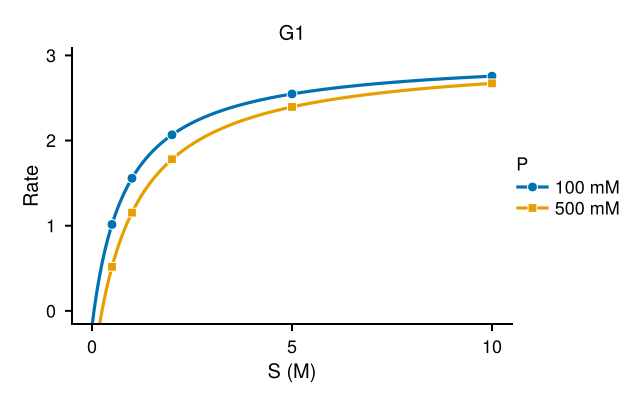

Fitting tutorial & data format
This page shows how to fit a rate equation to experimental data from start to finish. It covers the data format, constructing a FittingProblem, running the multi-start optimizer, and reading the result.
Data format
FittingProblem accepts any Tables.jl-compatible source — a DataFrame, a CSV-loaded table, or a plain NamedTuple of equal-length vectors. The required columns are:
| Column | Type | Description |
|---|---|---|
group | any | One independent experiment — rates measured with the same amount of enzyme at varying metabolite concentrations (a single kinetic-data figure from a paper is a typical group). Leave-one-group-out cross-validation folds on this column. |
Rate | finite, nonzero Real | Measured reaction rate. Must be finite and nonzero — the loss works in log space. |
| one per metabolite | finite Real ≥ 0 | Concentration of each metabolite, in molar (M) — use M for every metabolite so the fitted kinetic constants stay interpretable. Zero is valid; a negative, non-finite or missing value is not. Column names must match metabolites(mechanism) exactly. |
Call metabolites(mechanism) to find which concentration columns your data needs before constructing the problem.
The rate equation gives the rate per unit enzyme, so the fitter compares your Rate against the per-enzyme turnover. The default relative mode needs no action here: per-group centering cancels each group's enzyme amount. For absolute mode (absolute = true), first divide each rate by the enzyme amount used in its group. See Normalized vs absolute rate for the full explanation.
using EnzymeRates
uni_uni = @enzyme_mechanism begin
substrates: S
products: P
steps: begin
E + S <--> ES
ES <--> E + P
end
end
metabolites(uni_uni)2-element Vector{Symbol}:
:S
:PThe constructor checks the table, Keq and any reference before any fitting. It raises an ErrorException on what the fit cannot use, such as a missing column or a zero Rate; the constructor's docstring lists every check.
Building the FittingProblem
The example below generates synthetic data by evaluating the true rate equation on a concentration grid, then wraps it in a FittingProblem.
# The independent (fitted) constants of uni_uni: k_ES_to_E_P, k_ES_to_E_S, k_E_S_to_ES
true_params = (k_ES_to_E_P = 3.0, k_ES_to_E_S = 5.0, k_E_S_to_ES = 10.0)
Keq = 2.0
rate = compile_rate_equation(uni_uni)
concs_list = [(S = s, P = p) for s in (0.5, 1.0, 2.0, 5.0, 10.0) for p in (0.1, 0.5)]
data = (
group = fill("G1", length(concs_list)),
Rate = [rate(c, true_params, Keq) for c in concs_list],
S = [c.S for c in concs_list],
P = [c.P for c in concs_list],
)
fp = FittingProblem(uni_uni, data, Keq;
reference = [(S = data.S[1], P = data.P[1]) => data.Rate[1]])FittingProblem{EnzymeRates.Derivation._CompiledRateEquation{((:S, :P), (:E, :ES), (1,), (2,), ((1, 2, (1,), (), false, 1), (1, 2, (2,), (), false, 2)), (), 1, ())}, @NamedTuple{group::Vector{String}, Rate::Vector{Float64}, S::Vector{Float64}, P::Vector{Float64}}}(@enzyme_mechanism begin
substrates: S
products: P
steps: begin
E + S <--> ES
E + P <--> ES
end
end, compiled rate equation, EnzymeRates.Data.RateData{@NamedTuple{group::Vector{String}, Rate::Vector{Float64}, S::Vector{Float64}, P::Vector{Float64}}}((group = ["G1", "G1", "G1", "G1", "G1", "G1", "G1", "G1", "G1", "G1"], Rate = [1.0150375939849623, 0.5172413793103449, 1.5573770491803278, 1.1538461538461537, 2.067137809187279, 1.7796610169491525, 2.547169811320755, 2.3949579831932772, 2.7562326869806095, 2.671232876712329], S = [0.5, 0.5, 1.0, 1.0, 2.0, 2.0, 5.0, 5.0, 10.0, 10.0], P = [0.1, 0.5, 0.1, 0.5, 0.1, 0.5, 0.1, 0.5, 0.1, 0.5]), 2.0, false, Pair{NamedTuple, Float64}[(S = 0.5, P = 0.1) => 1.0150375939849623]), [[1, 2, 3, 4, 5, 6, 7, 8, 9, 10]], [0.014925650216675574, -0.6592456288842639, 0.4430030274272296, 0.14310084364067324, 0.7261649495886189, 0.5764229062518039, 0.9349828648863077, 0.8733656871571212, 1.0138647788257118, 0.9825401174153556], [6.59031021988875e-310, 6.5903102198919e-310, 6.5903102198935e-310, 6.59031015418987e-310, 6.59031021989665e-310, 6.5903102198935e-310, 6.59031018289627e-310, 6.5903102198998e-310, 6.590310219903e-310, 6.59031021990614e-310])Keq, the equilibrium constant of the overall reaction (the product-to-substrate concentration ratio at equilibrium, fixed by reaction thermodynamics), is the third argument, required and always user-supplied — the package never estimates it from data. For most enzyme reactions Keq is known — measured directly, or computed from a resource such as eQuilibrator. The constructor compiles the mechanism's rate equation once, so the fitting hot path pays no compilation overhead.
reference sets the scale of the fitted rate constants in relative mode, the default. These synthetic rates are per-enzyme turnover, so the first data row serves as the anchor and the fit recovers the constants on their true scale.
Running the fit
fit_rate_equation requires an explicit optimizer — the base package depends only on Optimization.jl and ships no solver backend. Install OptimizationCMAEvolutionStrategy (the recommended choice; a pure-Julia CMA-ES) or OptimizationBBO (a pure-Julia differential-evolution alternative) and pass its optimizer object. See Loss & optimizers for details.
using OptimizationCMAEvolutionStrategy
result = fit_rate_equation(
fp, CMAEvolutionStrategyOpt();
n_restarts = 3, maxtime = 10.0,
)
keys(result)(:params, :loss, :retcode, :at_bound)result.retcode isa Symboltrueresult.params(k_ES_to_E_P = 3.0000014965235464, k_ES_to_E_S = 5.000012921661242, k_E_S_to_ES = 10.000008947431079)result.params holds the fitted constants, the names of parameters(uni_uni), so it goes to rate(concentrations, result.params, Keq) and to plot_rate_equation_on_data as it is.
The fit runs n_restarts independent optimizations from random initial points and returns the best. Multiple restarts are necessary because finding the global minimum of an enzyme rate-equation fit is NP-hard — any single optimization can settle in a local minimum — and because the optimizer is stochastic, result.params and result.loss vary from run to run. Increase n_restarts until the fit returns the same loss on every run; empirically, 10–20 restarts is enough for many complex rate equations. A fit of 20 restarts usually takes about a second on real data (see How long a fit takes).
result.at_bound names the fitted parameters whose best value lies at an edge of the search box; Units and the search box in Getting Started explains it.
Check result.retcode === :Success to confirm the optimizer converged on its own criteria. Any other value — :Default, :MaxTime, :Failure, :NoFiniteLoss — means the fit is un-converged. :ReferenceFailed means the fitted law predicts zero, non-finite or opposite-sign turnover at a reference anchor; the fit then returns its constants unscaled, with loss = Inf. When time or restart budgets are tight, :MaxTime is common; increase n_restarts and maxtime for production fits.
In relative mode (the default), the returned params are scaled so the mechanism reproduces the reference turnovers. Normalized vs absolute rate explains the scale without a reference, absolute mode, and how to score a fit on other data; Loss & optimizers covers the loss function and how to supply your own optimizer.
Plotting the fit on the data
plot_rate_equation_on_data draws the fitted rate equation over the measured rates, one panel per group. In a panel the x axis is the metabolite with the most distinct concentrations in that group, and each combination of the other metabolites' concentrations is a series with its own colour and marker. It never fits: it draws the rate equation at the parameters and the Keq you pass. It needs a Makie backend, loaded here with using CairoMakie.
using CairoMakie
fig = plot_rate_equation_on_data(uni_uni, result.params, data, Keq)
save("fit_on_data.png", fig)
By default (absolute = false) each group's curves are multiplied by one factor, the geometric mean of the measured-to-predicted ratios, as the fitting loss does, so curves show the shape of the fit and not the raw prediction. The keywords figure and axis pass options to the Makie.Figure and to every panel's axis, for example axis = (; xscale = log10). concentration_unit is the unit of the concentration columns; with the default "M", the axis and legend show concentrations in M, mM, µM or nM, whichever fits, and any other unit is shown as given.
Every column of the table other than group and Rate is taken as a concentration, so remove columns that hold anything else, such as a pH or a source name. A mechanism ignores the concentrations of metabolites it does not bind, such as a regulator left out of it, but the panels still show them: measurements that differ only in such a metabolite are separate series that share one curve, which shows that the rate equation misses its effect.
To draw a rate equation of your own in place of a mechanism's, pass a function of the concentrations and the parameters, and no Keq: the function holds its own. It receives one row's concentrations as a NamedTuple, and the parameters as you gave them, in any form.
reversible_michaelis_menten(concentrations, params) =
params.Vmax * (concentrations.S - concentrations.P / params.Keq) /
(params.Km + concentrations.S + concentrations.P)
fig = plot_rate_equation_on_data(reversible_michaelis_menten,
(Vmax = 5.0, Km = 1.0, Keq = 2.0), data)